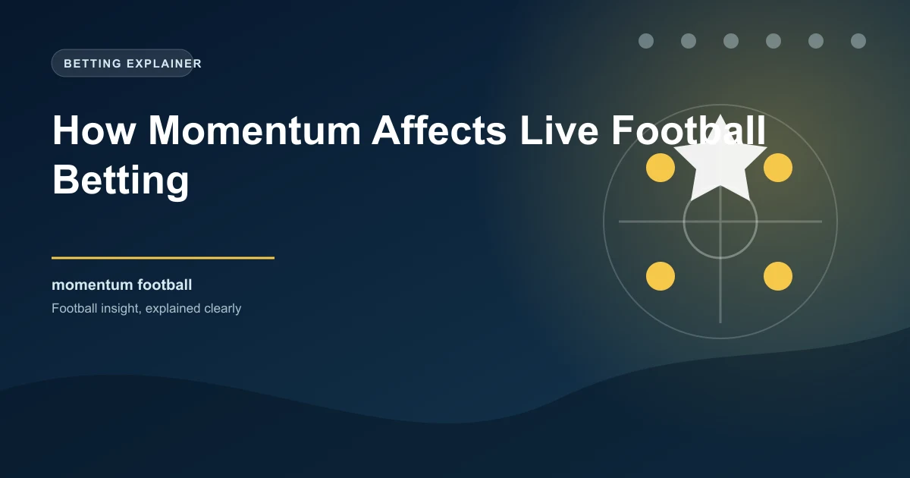

Momentum in football is one of the most powerful yet hardest-to-measure forces in the sport. Every football fan has seen it: one team dominates for 20 minutes, scores a goal, and then continues to press for more while the opposition crumbles. Understanding how momentum works and recognising its indicators in real time is one of the most valuable skills in live football betting.
This guide explains what momentum looks like statistically, how to identify it during a match, and how to use it to make better in-play betting decisions.
Momentum in football refers to a sustained period where one team dominates the match, creating chances, controlling territory, and putting the opposition under pressure. It is not just about having the ball. It is about what a team does with the ball and how effectively they suppress the opponent's attacking threat.
Momentum is measurable through several statistical indicators that, when combined, paint a clear picture of which team is currently in control of the match. These indicators include possession quality, shot volume, territory, pressing intensity, and dangerous attacks.
When watching a live match, several statistics reveal momentum in real time. Learning to read these indicators quickly gives you an edge in live betting.
Goals are the most dramatic momentum event in football. When a team scores, the psychological impact on both teams is enormous. The scoring team gains confidence and energy, while the conceding team often drops deeper and becomes more cautious.
Managers use substitutions to change the momentum of a match. Recognising which substitutions are momentum-shifting is valuable for live betting.
An attacking substitution (bringing on a striker or winger) signals that the manager believes their team needs to push forward. This often coincides with a period of increased pressure. A defensive substitution (bringing on a defender or defensive midfielder) signals the manager is trying to protect a result, which reduces the team's attacking momentum but may increase their resilience.
The timing of substitutions matters too. A substitution at half-time suggests the manager has identified a clear problem and is making a decisive change. This often leads to a significant shift in the match dynamic. A substitution at 60-65 minutes is the standard tactical window, while a substitution at 80+ minutes is often about game management rather than momentum change.
Identifying momentum is only useful if you can translate it into profitable bets. Here are practical strategies for momentum-based live betting.
Do not bet on momentum that has lasted less than 15 minutes. Short bursts of pressure are common in football and often self-correct. Genuine momentum typically persists for 15-25 minutes before the opposition adjusts or the pressing team tires. Wait for the pattern to establish before committing your stake.
The relationship between momentum and odds value is where live betting becomes profitable. Bookmakers use algorithms to adjust their live odds, but these algorithms do not always capture the full nuance of momentum. They respond to shots, goals, and cards, but they are slower to account for subtler momentum indicators like pressing intensity, passing accuracy in the final third, and defensive organisation breakdowns.
This gap between the algorithm's assessment and the real match dynamic is where value exists. If you can identify momentum that the bookmaker's model has not yet fully priced in, you can place bets at odds that are slightly more favourable than they should be.
Even the most dominant momentum period does not guarantee a goal. Teams can create chance after chance and still fail to score. A team with 70% possession, 15 shots, and an xG of 2.1 can still lose 0-1 to a single counter-attack. Use momentum as a guide for probability, not as a certainty.
The best momentum bettors develop an instinct for reading matches in real time. This comes from watching matches specifically looking for momentum indicators, not just watching casually. Pay attention to the statistical overlays that bookmakers and broadcasters provide. Track how dangerous attacks, shots, and possession shift over 5-minute windows. Over time, you will develop an intuitive sense for when momentum is building, peaking, and fading.
This skill is the foundation of profitable live betting. While pre-match analysis gives you a framework, live betting rewards those who can read the match as it unfolds and identify moments where the market has not yet caught up to the reality on the pitch.
Use our In-Play Tips to get real-time insights that complement your own momentum reading during live matches.
 Win
Win